C04-menu — 差異確認・修正中
幅224・行高48・アイコン22・間隔14とキャンセル行を反映。行ドラッグ、コピー/移動先の保存、無効ドロップ、アンカー固定を確認。元の行が消えてもメニューのドラッグが継続するよう修正。背景素材とカード外観は比較継続。


2026-09-30 / iOS基準 13618e5（カレンダー一覧・詳細の余白修正版）。画像をタップすると原寸を開きます。ローカルサーバーは使用しません。
幅224・行高48・アイコン22・間隔14とキャンセル行を反映。行ドラッグ、コピー/移動先の保存、無効ドロップ、アンカー固定を確認。元の行が消えてもメニューのドラッグが継続するよう修正。背景素材とカード外観は比較継続。
保存後の無効状態を撮影。共通18単位パス・線幅1.6・外形44に揃えました。背景と文字の差は継続確認。


編集フォームの入力欄・スイッチと、背後の文字を薄くする範囲を修正。4ページの切替を確認。参照との日付・ステータス表示の差は残っています。

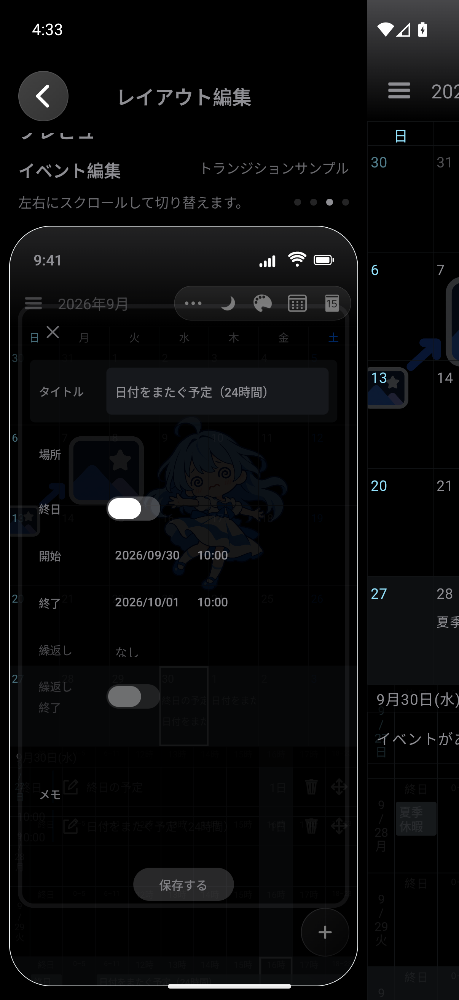
実際のルート画面をプレビューに使用。権限・ステータス表示の差あり。

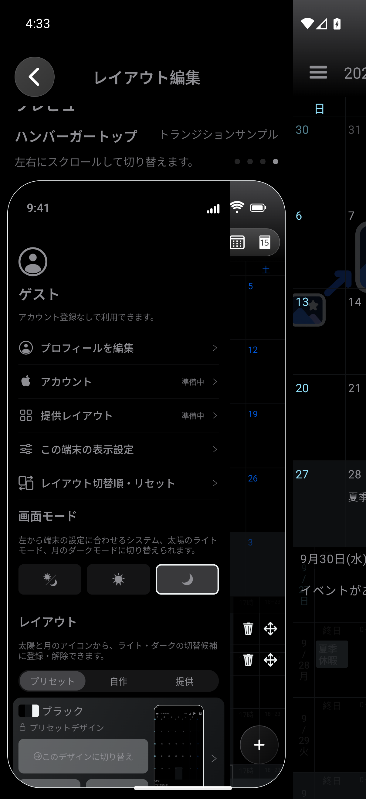
画面の参照あり。見た目・操作の一致は検証継続中です。


同じIrodoriを入力して再起動後の保持まで両OSで確認。余白の比較を継続。


同じサンプルで週表示を撮影。選択時刻や表示寸法の差を確認中。

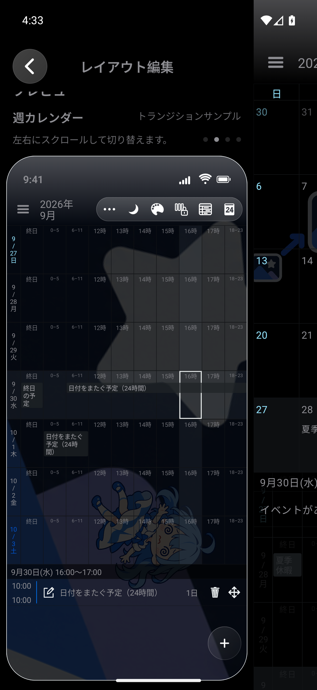
RGBA編集・タブ・保存色の保持と削除を確認。背景素材と色グリッドの差異は残っています。
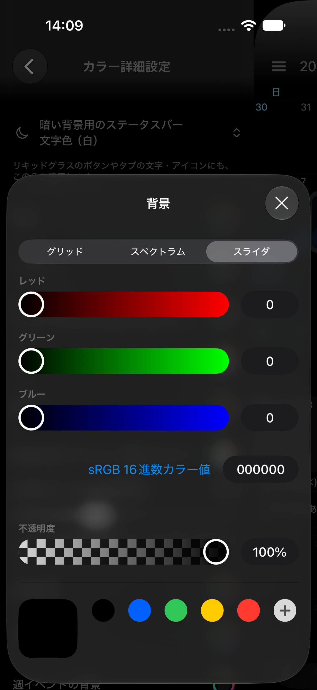
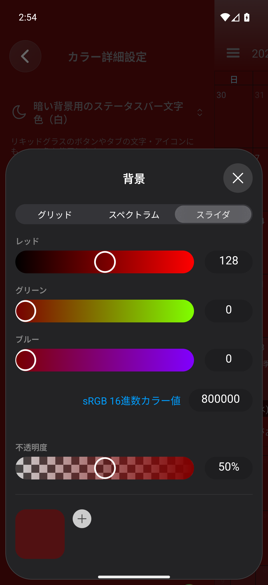
画面の参照あり。見た目・操作の一致は検証継続中です。


右上の3点間隔とボタン群の左右2pt余白を修正。固定メニューは背後のライブ描画をぼかす方式へ変更。Appleのガラス素材との完全一致は未達。


画面の参照あり。見た目・操作の一致は検証継続中です。


共有画像以外のアイコンはAndroid自作ベクターで、iOSと同一ではありません。線幅・配置・半円・調整記号を再修正。手・パレットなどの差異は未解消。

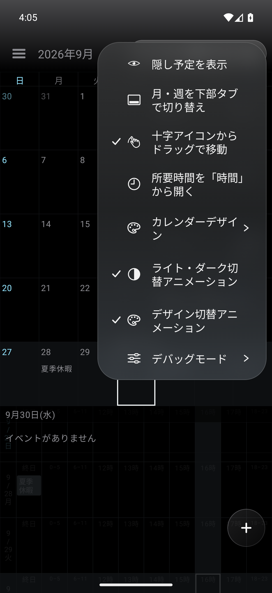
同じ複数日イベント・9月28日〜30日で再撮影。カレンダーごとの色を一覧の線へ反映。メニュー行からの移動・コピー・アンカーを追加し保存結果まで確認。端への滞在によるページ送り・月週切替、時間帯展開を追加し実アプリで確認。直接ドラッグの全経路と着地アニメーションは比較継続。


入力欄・終日スイッチの形状と余白を修正。入力、終日切替、キーボードを閉じる操作、保存せず閉じる操作を確認。参照とは日付・時刻・予定データが異なり、同条件の比較は未完了。


画面・状態を確認したiOS参照を準備中です。一致・対応済みとは判定していません。
画面の参照あり。見た目・操作の一致は検証継続中です。
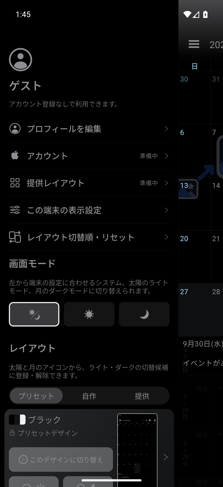
入力欄・アイコン・間隔を修正。名前入力と再起動の操作確認を継続。

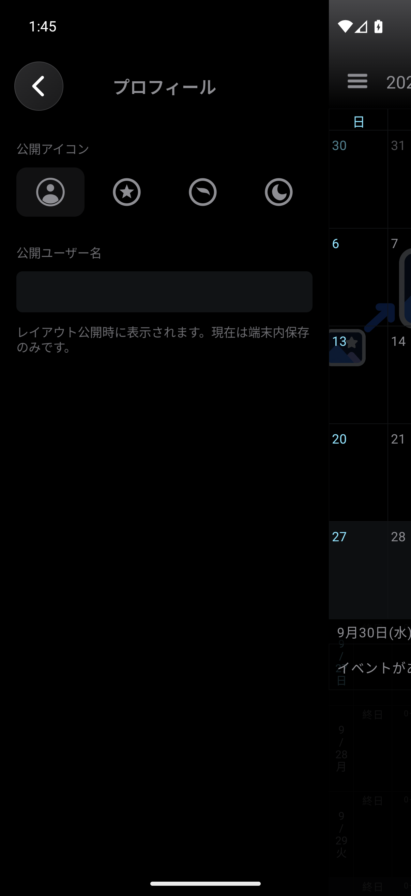
画面の参照あり。見た目・操作の一致は検証継続中です。


画面の参照あり。見た目・操作の一致は検証継続中です。


画面の参照あり。見た目・操作の一致は検証継続中です。


再撮影済み。Androidとカレンダーデータを揃える作業中。


iOSの3行説明で下余白がなくなる問題を再現・修正。自動→固定→自動の切替で確認。Androidとのデータ・文言差は残っています。修正前後はページ下部に掲載。


Androidの作成先は端末内カレンダー。入力・確認UIを修正中。

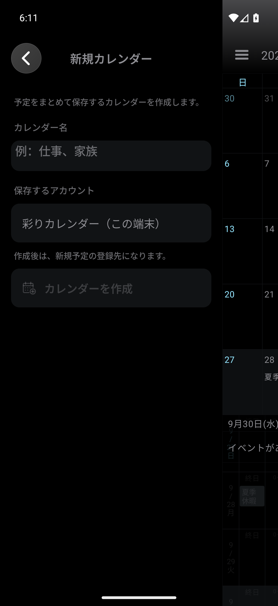
再撮影済み。切替順UI・ドラッグの実装と比較を継続。


再撮影済み。依存ライブラリはOSで異なる。ライセンス本文画面は未照合。


画面・状態を確認したiOS参照を準備中です。一致・対応済みとは判定していません。
再撮影済み。全幅表示へ修正。余白と遷移を検証中。


画面の参照あり。見た目・操作の一致は検証継続中です。

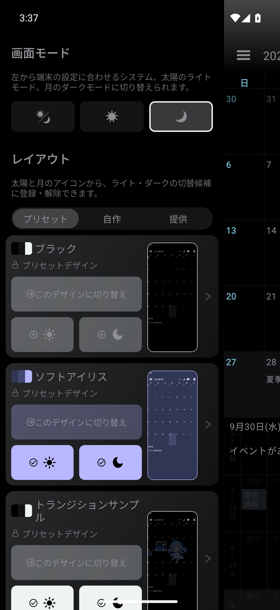
新規作成を設定・プレビュー・名前・作成の順へ変更。実操作で作成後の保存エディタ移行を確認。


画面の参照あり。見た目・操作の一致は検証継続中です。


同じトランジションサンプルで再撮影。4ページの横スワイプを確認。余白・ステータス表示は差が残っています。

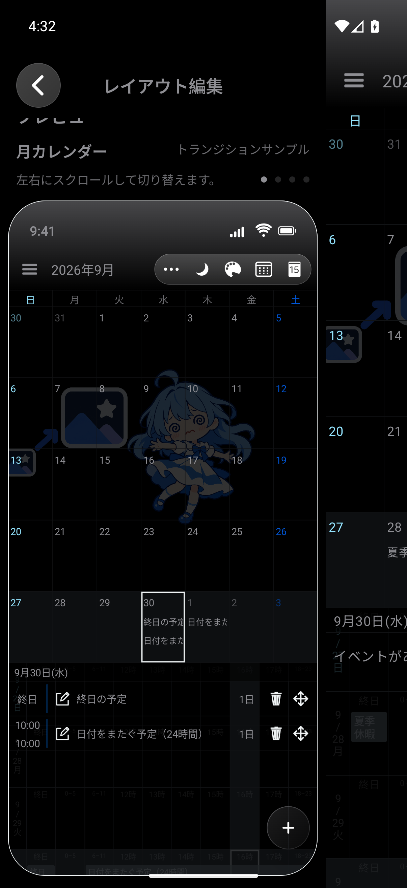
画面の参照あり。見た目・操作の一致は検証継続中です。


画面の参照あり。見た目・操作の一致は検証継続中です。
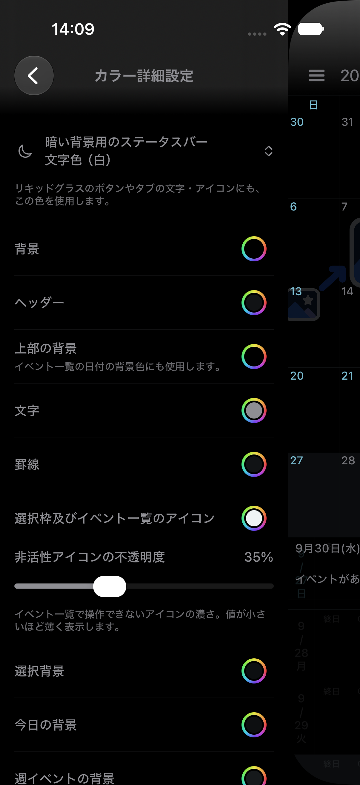
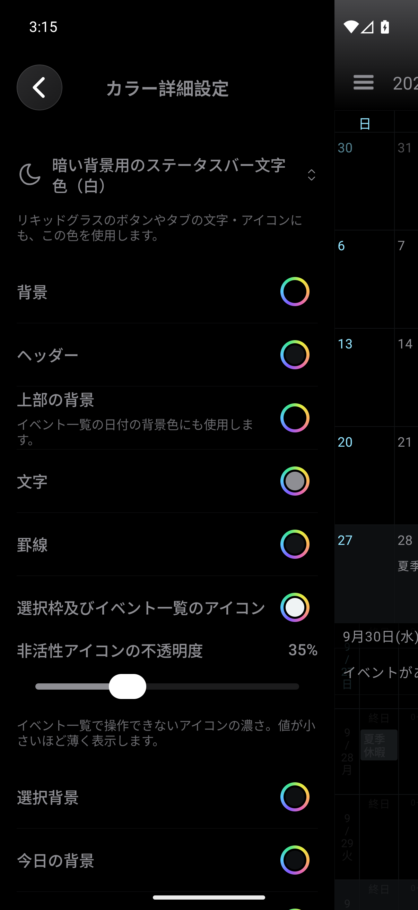
画面の参照あり。見た目・操作の一致は検証継続中です。


画面の参照あり。見た目・操作の一致は検証継続中です。


画面の参照あり。見た目・操作の一致は検証継続中です。


画面の参照あり。見た目・操作の一致は検証継続中です。


画面の参照あり。見た目・操作の一致は検証継続中です。
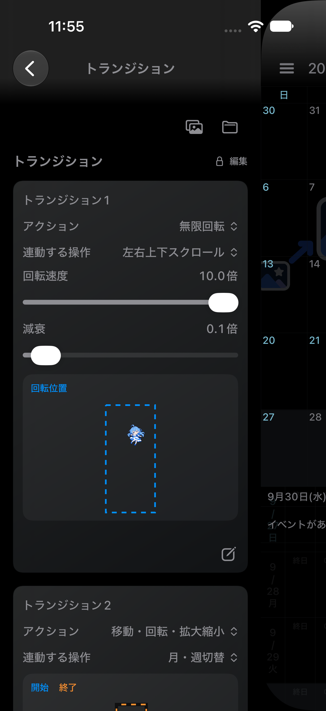
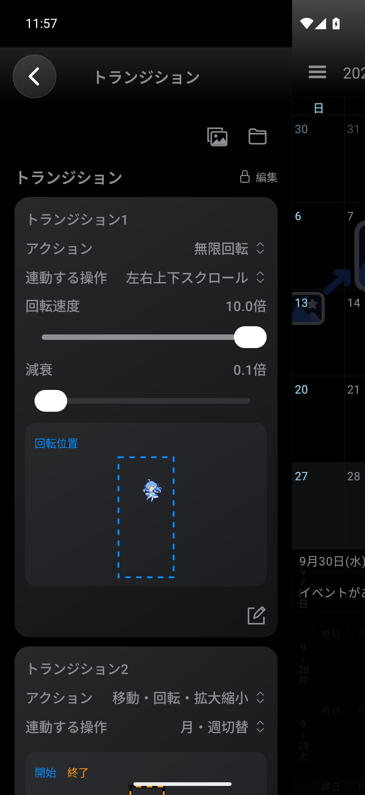
画面・状態を確認したiOS参照を準備中です。一致・対応済みとは判定していません。
長い名前と登録先バッジ付きの2行説明に上下8ptを確保。専用のテストデータで確認しています。


iPhone 18 Pro / iOS 27の同じシミュレーター・幅・登録先設定で撮影。自動選択時の3行説明が最低高さ64ptを使い切り、下余白がなくなっていました。上下6ptを確保し、文章量に応じて行を広げました。固定時の2行説明と、自動へ戻した後も確認済み。詳細の修正版は実機配布済み。さらに一覧の長い名前・登録先説明の折り返しも上下8ptを確保しました。


実アプリでコピーを保持した状態を撮影。右端で翌月、月の下端で週表示へ変更。週の時間帯は700msで展開し、キャンセルで元に戻り、有効ドロップでは維持します。保存されたコピー1件とキャンセル時の新規保存なしも確認。以下はAndroidの動作証拠であり、iOSとの外観一致を示す比較ではありません。カード形状・着地アニメーションは未完了です。


各画像の上段がiOS、下段がAndroid。同じ1206px幅のキャプチャーから同じ範囲を切り出し。背景素材の差は未解消です。